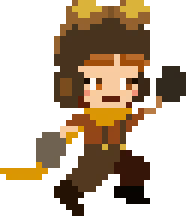
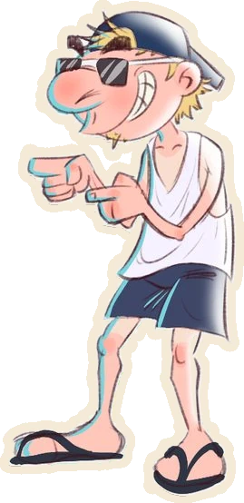
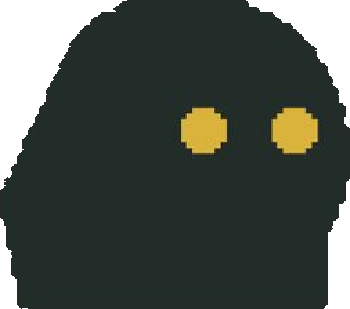
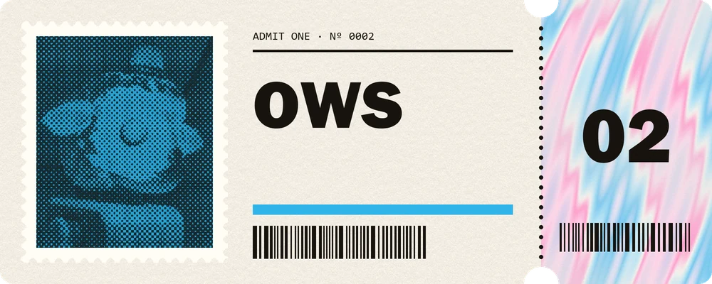
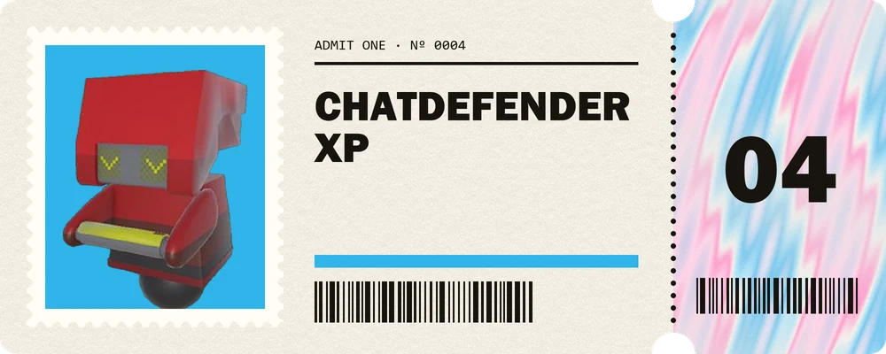
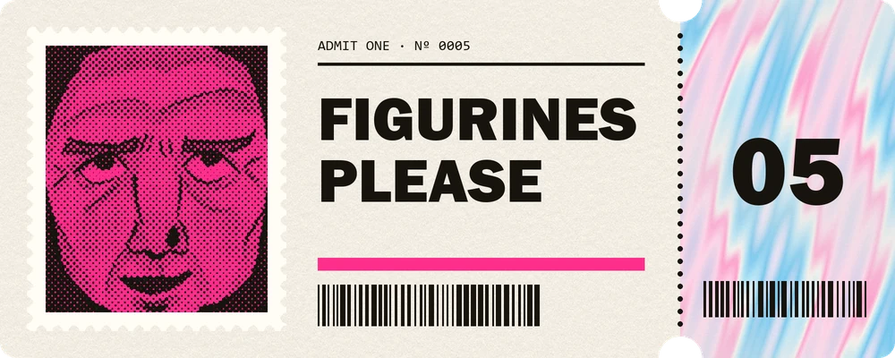

Ciclo DAM
Prácticas de clase y apps de Android.




Paquete de Unity que convierte diseños de FigCraft en UI lista para usar.


OWS, ChatDefender XP y las jams: el código de los proyectos del máster.

El repo de la jam de Navidad, abierto entero.
↗Prácticas de clase y apps de Android.
HTML, CSS y JS a mano, y scripts de Python que imprimen los banners en trama.